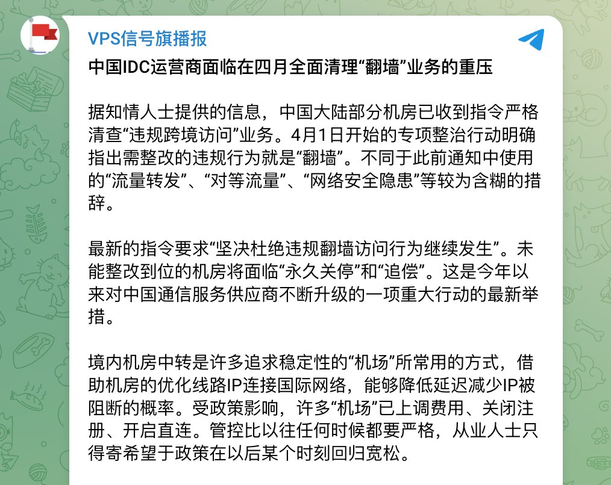

奶昔🥤
@realNyarime
@geekbb 那就把esim用起来，这都不叫翻墙了

奶昔🥤
@realNyarime
面对4月以来监管部门对国内机房施压，要求运营商集团向省公司下发函件，清退涉及VPN翻墙客户，不少机场又重回直连道路，不少推友又开始失联了。对于普通人，租赁不起昂贵的跨境专线，涉及外贸又需要外网需求，只能把目光投向eSIM+国际漫游的选项。 https://t.co/2oZmsP788x
Geek
@geekbb
往后的形式会更加困难，区委指示叫我们村自为战，坚持斗争，一定要坚持！ https://t.co/YSbtyHF9Nh